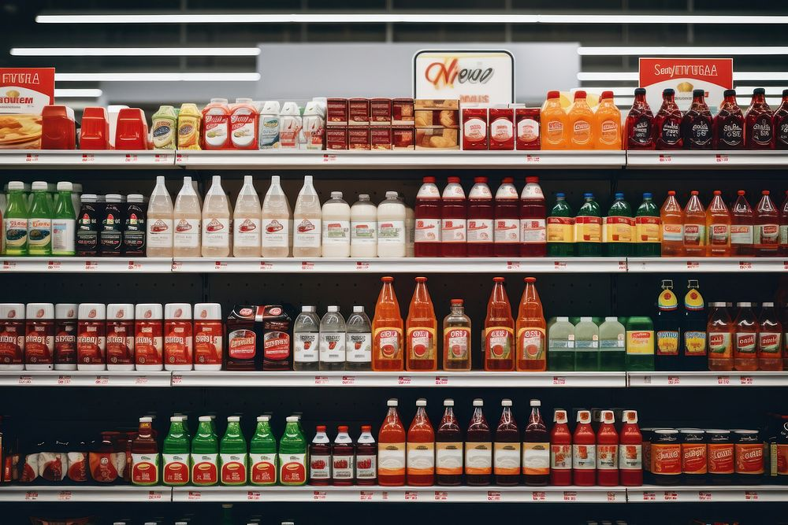

I am a Business Intelligence Analyst at Oxygen X Finance Company in Lagos, Nigeria, and a First Class
Computer Science graduate of Augustine University (CGPA 4.86/5.0, Overall Best Graduating Student, 2023).
My undergraduate thesis compared machine learning models for heart disease and diabetes prediction.
It left me with the question I want to pursue in graduate research: how can clinical AI learn from
sensitive patient data without compromising it, and how can its predictions be made reliable enough
for clinicians to act on?
At work, I build data quality monitoring and lending analytics on sensitive customer data within
strict governance controls.
Compared K-Nearest Neighbours, Random Forest, Support Vector Machine and Naïve Bayes on two public
clinical datasets: 1,025 heart disease records and the Pima Indians Diabetes dataset (768 patients).
Models were evaluated with accuracy, recall and F1-score. KNN performed best for heart disease
(87% accuracy) and Random Forest for diabetes (82.8%).
What I learnt: a high accuracy on small public data does not make a model ready for
clinical use. Missed cases matter more than false alarms, and clinicians need to know how far to
trust each individual prediction. This now drives my interest in reliable, privacy-preserving
clinical machine learning.

Applied K-Means, DBSCAN and Gaussian Mixture Models to demographic and transaction data for an
automobile manufacturer, evaluated cluster quality with silhouette score and inertia, and
identified four customer segments.

Built a machine learning model with feature engineering to predict churn among SME customers of an
electricity provider, and visualised at-risk segments in Power BI.
A retrieval-based chatbot that answers questions about uploaded PDF files, built with LangChain,
the OpenAI API and Streamlit.

Analysed channel performance, acquisition cost and customer feedback for a fictional lending
platform using statistical methods and Power BI. (Public synthetic dataset.)

Cleaned and modelled sales, vendor, brand and region data for a fictional retailer, and built a
Power BI dashboard with DAX measures for revenue trends and regional performance.